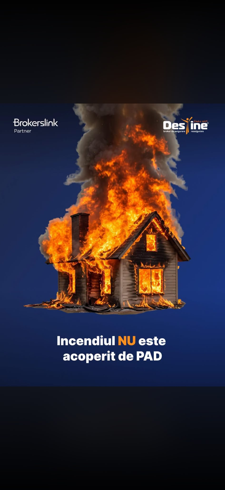
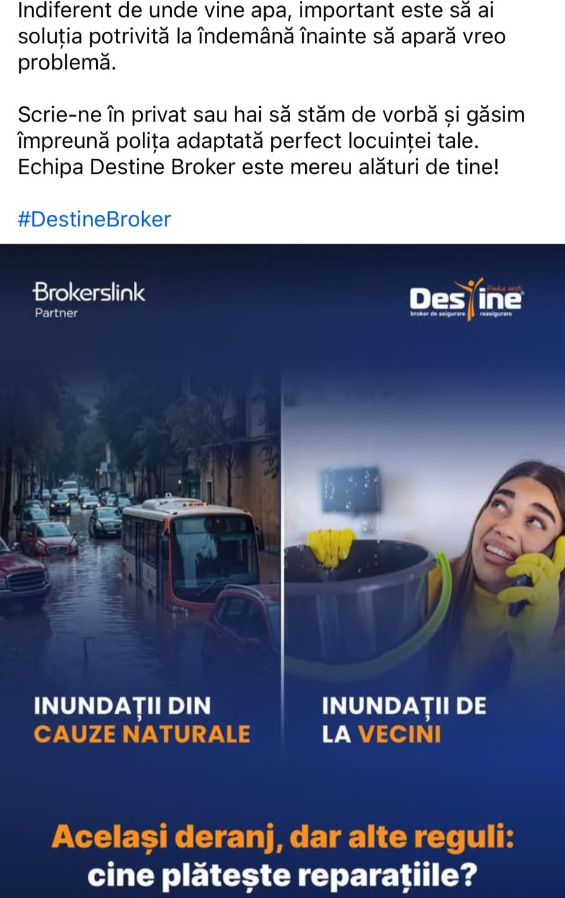

Ce acoperă PAD și când ai nevoie de protecție suplimentară?
Două exemple vizuale despre riscurile pentru locuință. Consultă condițiile poliței pentru a verifica exact ce evenimente sunt acoperite.

Incendiul și protecția locuinței

Inundații naturale și inundații de la vecini
Important: Polița PAD privește riscurile naturale stabilite prin lege. Pentru incendii, avarii la instalații sau daune provocate vecinilor poate fi necesară o asigurare facultativă, în funcție de acoperirile și excluderile contractului.